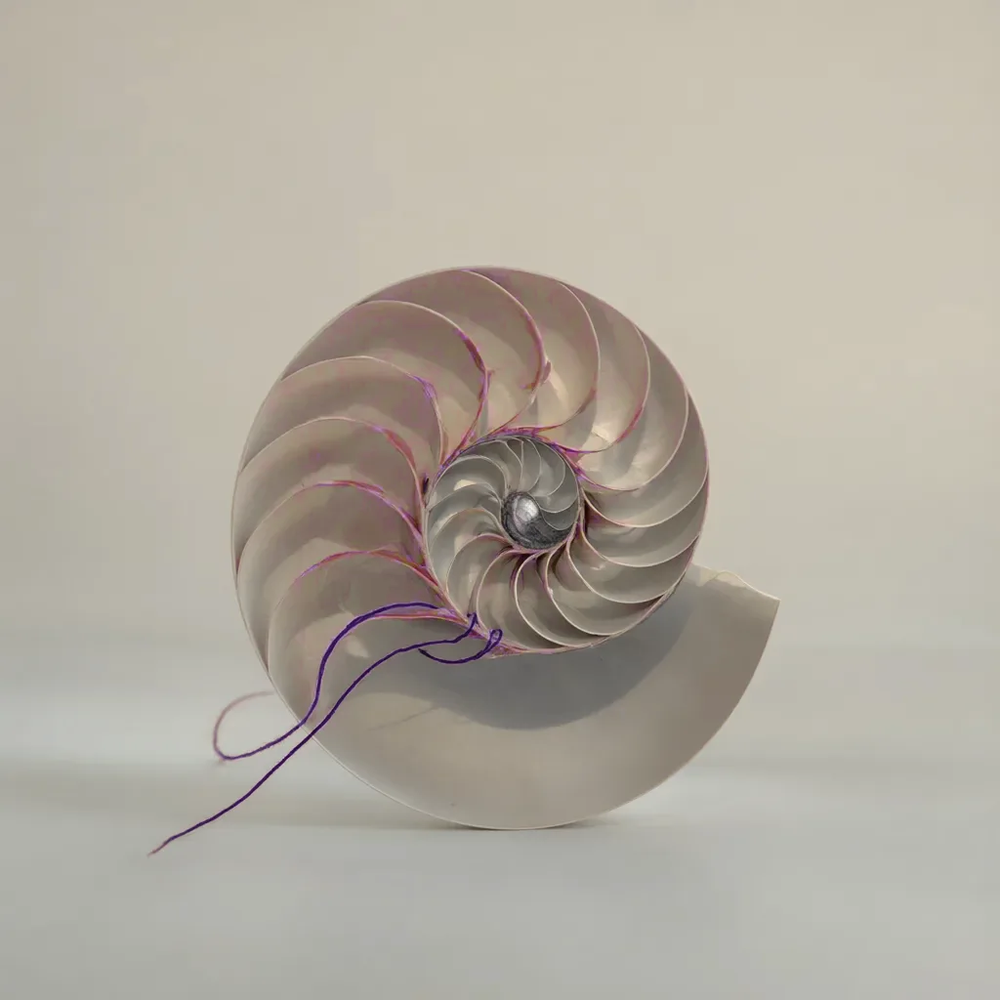

Addiction rarely hits all at once. It tightens one turn at a time, and every turn has a way out.
Entry
F1
Category
Safety
Checked
Reading
7 min
Sections
6

Evidence
ReportedStated by a serious secondary source read in full.Vivian’s field notesFirst-hand experience, not a study.
This chapter is not advice for your situation.
In 30 seconds
Spending that started as play can tighten in five turns, from curious to chasing.
Each turn has a sign you can spot and a way out. The earlier you take it, the less it costs.
Regret that keeps spending is an early warning. Don’t take it as a comfort.
Pressure from a paid dom and designs built to hook you both speed up the turns. You can spot both and say no.
Hiding it is a second problem on top of the first. Tell one person early.
You will learn
The five turns, with the sign to spot and the way out of each.
The small loop that repeats inside every turn, and where to break it.
Signs you can see in yourself, and how play talk differs from real distress.
Pressure moves and hooking designs, written so you can say no to them.
A game that runs on money can go wrong quietly. Better you read how it goes here than find out late at night, alone, with your card in your hand.
Vivian
The five turns
Addiction rarely hits all at once. It tightens one turn at a time. Vivian’s field notesFirst-hand experience, not a study. Every turn has a way out, and the earlier you take it, the less it costs.
The spiralspiralTwo senses. First, a rotating pattern, the typical hypnotic image of the scene. Second, the spending spiral, where spending that started as play tightens turn by turn, from curious to chasing. If you regret it and keep spending, that’s an early warning, and every turn of the spending spiral has a way out, which Where to get help helps you find. below is a rough map: people skip turns, stay stuck on one for a long time, or step back. Set a limitlimitA spending limit picked by the person who pays, while calm, before the session. It’s held outside your own head, in a server that enforces it, a bank limit or a trusted person, and it only goes up after a cooldown. A limit typed in the middle of a session is weak, and a limit is a ceiling, never a target. early. A limit costs the least to keep while it’s never been tested. Vivian’s field notesFirst-hand experience, not a study.
A first gift, for the thrill. It feels like play, because it is. The sign to notice: You’re already thinking about the next gift before the evening’s over. The way out: Set a monthly limit now, while it costs nothing to keep. Vivian’s field notesFirst-hand experience, not a study.
2
Regular
You send on a rhythm. You have a limit, and it still holds. The sign to notice: Your gift has a day of the week, and you wait for that day. The way out: Write the limit down where you’ll see it, and tell one person the number. Vivian’s field notesFirst-hand experience, not a study.
3
Over the limit
The limit moves once, then again. Each time feels like the exception. The sign to notice: You’ve said “just this once” more than once. The way out: Take a full week off. If the limit moves again after that, it was never a limit. Vivian’s field notesFirst-hand experience, not a study.
4
Hiding it
Deleted statements, a second card, lies to the people at home. The sign to notice: You clear the history before you close the app. The way out: Tell one person the real total. Then call a helpline. Vivian’s field notesFirst-hand experience, not a study.
5
Chasing
You send to fix the feeling the last send left you with. This is the centre of the spiral. The sign to notice: You send to feel better about the last time you sent. The way out: Stop everything today. Remove the saved card and call a helpline. Vivian’s field notesFirst-hand experience, not a study.
Spending comes in waves: a burst of sends, a silence, then a return. A relapserelapseSending money again after deciding to stop. A relapser is a sub who quits and comes back several times, and it’s a real warning sign of compulsive spending. One press commentator compared some cases to problem gambling. Telling someone is a first step, and Where to get help lists where to go. often comes when life is going well. Vivian’s field notesFirst-hand experience, not a study.
The loop inside every turn
Inside each turn, the same loop runs: you feel empty or aroused, you want to pay, you send, the guilt hits hard, you hide it, then things go quiet for a while. When life calms down, it starts over. Vivian’s field notesFirst-hand experience, not a study.
Hiding it is a second problem on top of the first. When you delete the chat, the evidence is gone, the shame grows, nobody who could help can see the pattern, and the loop closes. Vivian’s field notesFirst-hand experience, not a study. A Psychology Today blog post on financial dominatrixes lists hiding the spending from a primary partner as a risk factor. ReportedStated by a serious secondary source read in full.The Psychology of Financial Dominatrixes (blog post) (opens in a new tab) Accessed 3 November 2026. Telling one person you trust soon after the first send works better than waiting for a worse week. Vivian’s field notesFirst-hand experience, not a study.
Where to break the loop
1
When you want to send: wait one full night first, and name the feeling that came before the urge.
2
Before the send: check your limit. If you’ve reached it, the answer is no.
3
After the send: write the amount down in the one place where you track it.
4
When the guilt hits: tell one person you trust, soon, while the story is still short.
5
Instead of deleting: keep the record. Someone helping you can work with a record.
6
When things go quiet: set your rule for the next time you want to send.
Signs you can see in yourself
One sign on its own proves little. Several together make a pattern. Vivian’s field notesFirst-hand experience, not a study. These are the ones that come up most often.
Red flags
Signs the spending is turning compulsive
You regret spending and keep going, telling yourself it’s better to give to this dom than to a stranger. Vivian’s field notesFirst-hand experience, not a study.
Your sends bunch up late at night, when you’re tired, aroused or drinking. Vivian’s field notesFirst-hand experience, not a study.
You send large sums in one day, or pay several doms around the same time. Vivian’s field notesFirst-hand experience, not a study.
You clear chats, history or statements so nobody can see. Vivian’s field notesFirst-hand experience, not a study.
You go back to a persona’s page to act on an urge, and the only thing that stopped you was an empty account. Vivian’s field notesFirst-hand experience, not a study.
Addiction words like “my drug” or “brainwashed” show up next to rising spending or lost sleep. Vivian’s field notesFirst-hand experience, not a study.
Counter. Pick one sign. Tell one person. Set a limit and take a full week off. If debt has started, go to Where to get help today. If you feel hopeless or unsafe, call emergency services or a crisis line now, as listed in Where to get help.
Addiction words are usually play. Vivian’s field notesFirst-hand experience, not a study. They mean something when real damage comes with them: a former participant described men who sold cars, went into debt and took second jobs. ReportedStated by a serious secondary source read in full.[a former participant] has seen men left broke and hungry from ‘paying women to talk to them’ (opens in a new tab) Accessed 3 November 2026. A first-person account raises a consent concern about a client taking on card debt. ReportedStated by a serious secondary source read in full.Diary of a Financial Dominatrix, part one (opens in a new tab) Accessed 3 November 2026. If you say yes while aroused, ashamed, drunk or up against a deadline, that consent is weak. Vivian’s field notesFirst-hand experience, not a study.
Your limit is a ceiling. If you see the room under it as money you’re free to spend, you’re treating it as a target. Stay well under it when you’re excited, and don’t keep moving it. Vivian’s field notesFirst-hand experience, not a study.
Check yourself
Regret that keeps spending, with a reason attached, is a warning. It’s never a comfort.
Answer. That he may be making excuses, and it’s an early warning. Regret that keeps spending, with a reason attached, is a warning. It’s never a comfort.
On its own it’s play. Next to real damage, it’s a reason to set a limit or take a break.
Answer. When it sits next to rising spending or lost sleep. On its own it’s play. Next to real damage, it’s a reason to set a limit or take a break.
0 of 2 right
Nothing you answer here is saved or sent.
Pressure you will meet
Pressure rarely sounds like pressure. It sounds warm, urgent, or like a joke. Press reports describe manipulative pressure from some dominants, blackmail in some cases, and people in support groups being targeted. ReportedStated by a serious secondary source read in full.[a former participant] has seen men left broke and hungry from ‘paying women to talk to them’ (opens in a new tab) Accessed 3 November 2026. A joke that’s fine between friends becomes a pressure move when a paid stranger makes it. Vivian’s field notesFirst-hand experience, not a study.
Pressure moves, and what to do
What they say or do
The counter
“Send now, the offer ends tonight,” said by one dom after another. Vivian’s field notesFirst-hand experience, not a study.
Wait a day. A real offer survives one night.
A round sum she says you owe after one session. Vivian’s field notesFirst-hand experience, not a study.
There’s no debt unless you agreed to one in advance. Walk away.
Questions about your income or payday, then bigger asks around payday. Vivian’s field notesFirst-hand experience, not a study.
Never share your payday or your balance. Keep your limit the same whatever is in the account.
Hints that she’ll leave or go to someone else when you hesitate. Vivian’s field notesFirst-hand experience, not a study.
Answer calmly. Don’t commit to more just to calm her down.
“Your sends make me stronger,” so quitting feels like undoing your work. Vivian’s field notesFirst-hand experience, not a study.
That’s a role. Quitting undoes nothing. Keep your limit.
“Only me” talk, anger when you send to someone else, offers to take less so you send less. Vivian’s field notesFirst-hand experience, not a study.
Someone you pay can’t be your safety net. Set your own limit.
Oaths, reporting rules, demands for proof of private acts. Vivian’s field notesFirst-hand experience, not a study.
A fair rule can be renegotiated. Refuse one that makes a single person your only gatekeeper.
Small steps into your daily life: a wallpaper, a profile picture, a dedicated account, merchandise. Vivian’s field notesFirst-hand experience, not a study.
Decide in advance which steps you’ll never take. Keep at least one account that’s fully yours.
Each line is here so you can spot it. None of it is a technique to use.
A taste can be grown. Session after session of praise and ritual can turn a tentative taste into a fixed one, and some doms aim for this openly. Ask yourself whether an interest is really yours or was grown to make you spend more. Vivian’s field notesFirst-hand experience, not a study.
Watch how she answers when you name an urge. If she slows things down, that’s care. If she answers with an offer or asks for a send, she’s selling to your urge. Vivian’s field notesFirst-hand experience, not a study.
The person who looks out for you can’t be paid by your sends. A dom who earns from you can stop, listen and send you to help outside the game. If she tapers you off herself, manages your debts or moves you to a better dom, that’s a conflict of interest. Vivian’s field notesFirst-hand experience, not a study.
Design that hooks
A bet the house always wins is a legitimate kink. Outside play, it’s also exactly what money pressure looks like. Consent, a clear start and a clear exit make it play. The same mechanics with no exit are exploitation. A house-edgehouse edgeThe share of each bet the house keeps over time. A game that states its edge lets you read the odds, and a game that hides odds or prices is a pressure design. is a show when the chips are fake, and a pattern of loss when the money is real. Vivian’s field notesFirst-hand experience, not a study.
Hooking design and safe design
Scroll the table sideways
Hooking design and safe design
Device
What it does to you
Safe version
Hidden total
You can’t see how far you’ve gone Vivian’s field notesFirst-hand experience, not a study.
A flat price and a running total
A near-miss built in on purpose
It pulls you into one more try Vivian’s field notesFirst-hand experience, not a study.
Outcomes shown plainly
Bets that rise with each tier
The stake grows with your excitement Vivian’s field notesFirst-hand experience, not a study.
Fixed stakes picked before you start
Streaks, daily logins, free spins
Play turns into fear of losing what you’ve put in Vivian’s field notesFirst-hand experience, not a study.
Rewards that never expire
Collections that fade unless you pay
A low price hides a subscription Vivian’s field notesFirst-hand experience, not a study.
The full cost stated up front
Public rankings and tallies of sends
Spending turns into a contest Vivian’s field notesFirst-hand experience, not a study.
Rankings without amounts, or none at all
A top level that locks the switch
It takes away your way out Vivian’s field notesFirst-hand experience, not a study.
A stop that works at once, in every state
People defend hidden totals because they earn more: a random draw can hide a big item among small ones. That’s exactly why they’re harmful. Someone who’s over-excited keeps going because he can’t see the total. Vivian’s field notesFirst-hand experience, not a study.
Words that hook. Drain posts put a confident picture next to text that enjoys watching a balance fall, and they end on an order. Relapse captions mock you for coming back and push you to borrow. Ruin-list captions tell readers to empty their savings and max out their cards. Read these as hooks, never as facts about you. Ruin-list content is harmful: it goes after the most vulnerable people and invites real financial damage. Vivian’s field notesFirst-hand experience, not a study.
Ads for spending tools use the same drug talk and sell dependence. Vivian’s field notesFirst-hand experience, not a study. Ask what a tool does, what it collects and how you stop it. Breaks that hold shows what safe design looks like.
Myth and fact
Myth
It’s only a kink, so it can’t be a problem.
Fact
A kink has a clear start and a clear exit. The same mechanics with no exit leave real debt, real shame and lost sleep. Vivian’s field notesFirst-hand experience, not a study.
Myth
If I regret it and carry on, I’m fine.
Fact
Regret plus a reason to keep going is an early sign your spending is turning compulsive. Vivian’s field notesFirst-hand experience, not a study.
Myth
Stopping tonight is too drastic, so I should cut down slowly.
Fact
You can always stop the money now, and you don’t need a plan first. What makes it hold is support from outside the game: a person who knows the real total, and the services in Where to get help. Vivian’s field notesFirst-hand experience, not a study.
A message late at night
It’s late. You’re tired and you’ve had a drink. A message says the offer ends tonight and that you’re the only one who understands. You’re under your limit for the month.
A limit is a ceiling. Late night, a drink and a deadline are exactly the setting this page describes.
The deadline still decided for you. Only the amount changed.
Right. A real offer survives one night, and tomorrow you choose with a clear head.
Remember it
1The spiral has five turns, and each one has a sign and a way out.
2Regret that keeps spending is an early warning.
3Hiding it is a second problem. Tell one person the real total.
4Pressure and hooking design are described here so you can spot them and say no.
5A limit is a ceiling, and nobody paid by your sends can be your safety net.
What you did.
Free, confidential helplines exist in most countries.
Telling one person you trust soon after the first send works better than waiting for a worse week.
Vivian’s field notesFirst-hand experience, not a study.
The loop is easier to see from outside. From my side of the screen, when someone comes back after a quiet stretch, the same message is often full of relief and shame. Some people hate the scene on principle and still come back to it, and in my experience that’s common. If you see yourself in these turns, there’s nothing unusual about you. What matters is which way out you take.
Vivian’s field notesFirst-hand experience, not a study.
Several together make a pattern.
Vivian’s field notesFirst-hand experience, not a study.
You regret spending and keep going, telling yourself it’s better to give to this dom than to a stranger.
Vivian’s field notesFirst-hand experience, not a study.
Your sends bunch up late at night, when you’re tired, aroused or drinking.
Vivian’s field notesFirst-hand experience, not a study.
You send large sums in one day, or pay several doms around the same time.
Vivian’s field notesFirst-hand experience, not a study.
You clear chats, history or statements so nobody can see.
Vivian’s field notesFirst-hand experience, not a study.
You go back to a persona’s page to act on an urge, and the only thing that stopped you was an empty account.
Vivian’s field notesFirst-hand experience, not a study.
Addiction words like “my drug” or “brainwashed” show up next to rising spending or lost sleep.
Vivian’s field notesFirst-hand experience, not a study.
Addiction words are usually play.
Vivian’s field notesFirst-hand experience, not a study.
They mean something when real damage comes with them: a former participant described men who sold cars, went into debt and took second jobs.